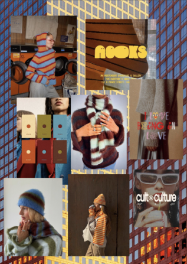
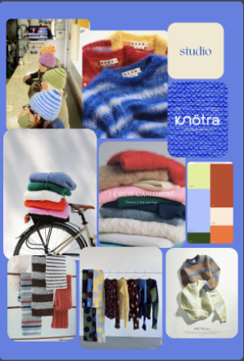
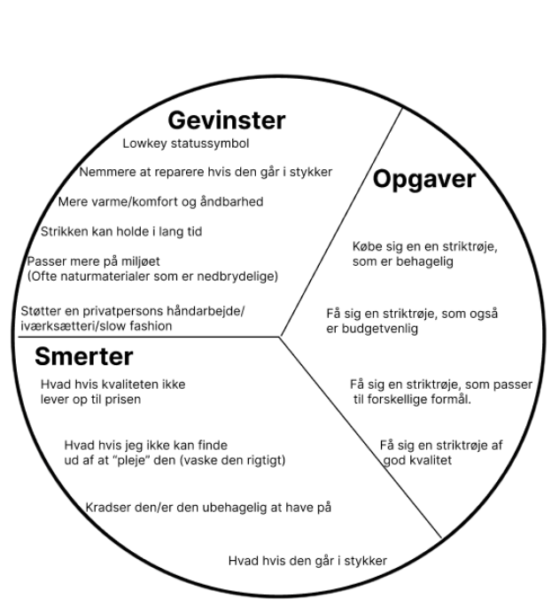
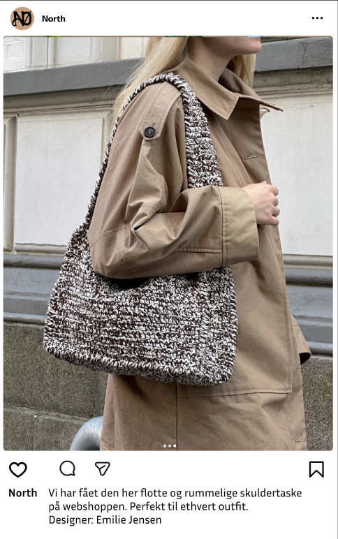
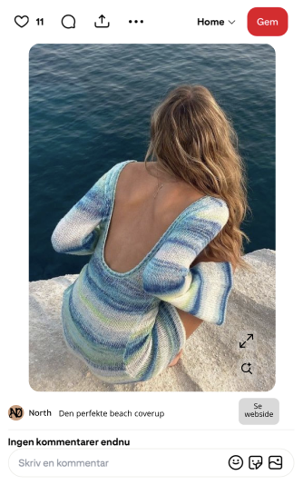

Projekt
NØRTH
Prøv min prototype
01. Brandpersonlighed
I denne case byggede vi et slow fashion brand fra bunden og skulle i den forbindelse finde vores brandpersonlighed. Her arbejdede vi først med 2 forskellige personligheder. Vi lavede forskellige moodboards som skulle fange vores visuelle identitet. Senere samlede vi vores moodboards til ét fælles og lavede vores personlighed ud fra det. På billederne her ser man mine to moodboards.



02. Brugeren først
I starten af processen arbejdede vi meget med at finde ud af, hvordan vores brand skulle se ud, men også hvordan vi kunne skabe værdi for brugerne. Vi lavede bl.a. et VPC som ses på billedet her. Det brugte vi til at pejle os ind på, hvordan vi kunne skabe den bedste oplevelse for vores brugere og hvad vi som brand ville hjælpe vores brugere med.
03. SoMe
Vi arbejdede også med, hvordan vi ville fremstå som brand på SoMe, da vores målgruppe ofte søger inspiration og opdager nye brands netop her. Her ønskede vi at vores brandidentitet og personlighed stod tydeligt frem på vores SoMe profiler. Det var også vigtigt for os, at vores opslag var letlæselige og overskuelige at se på.

